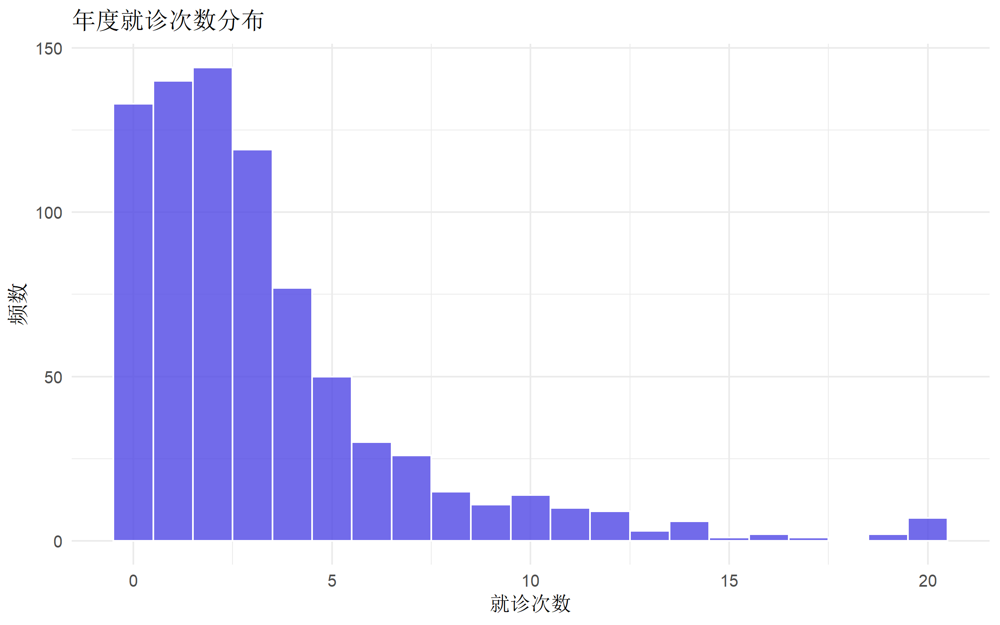
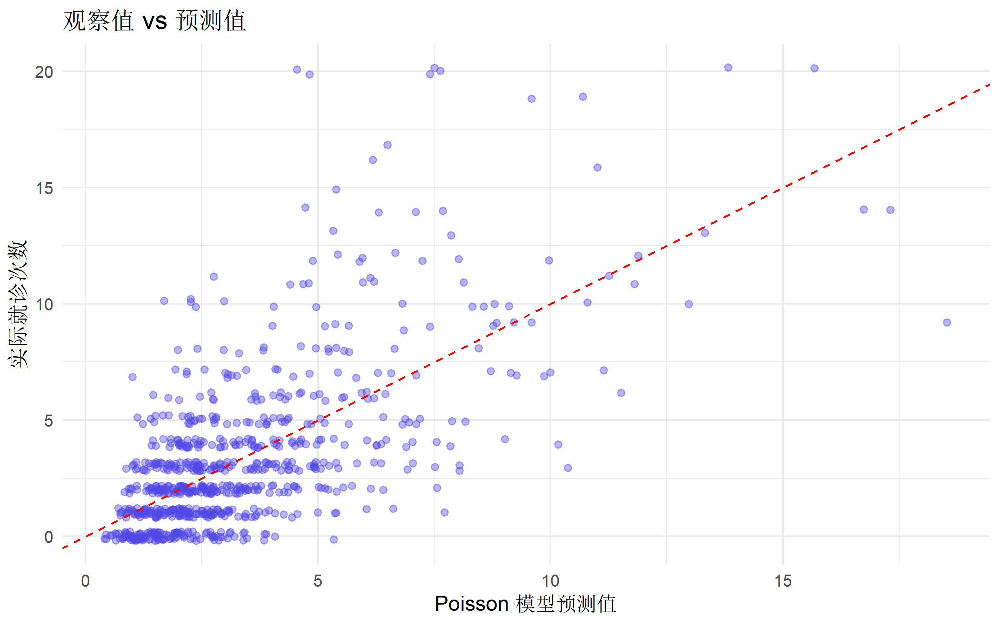
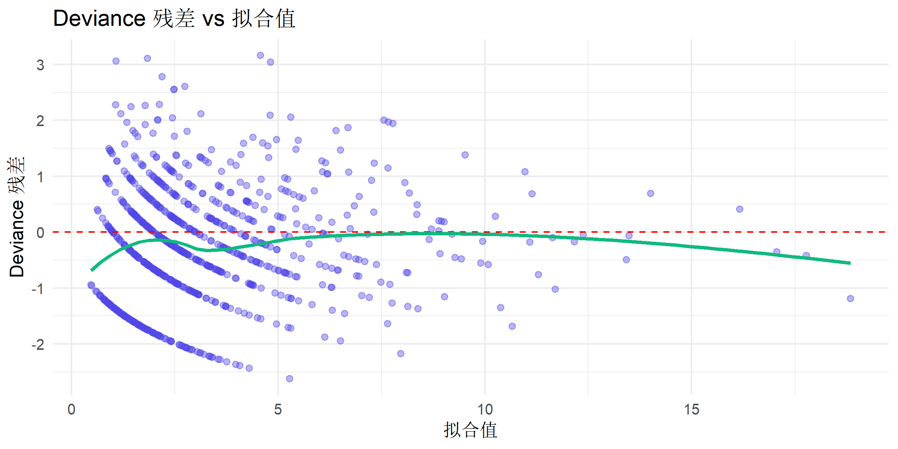
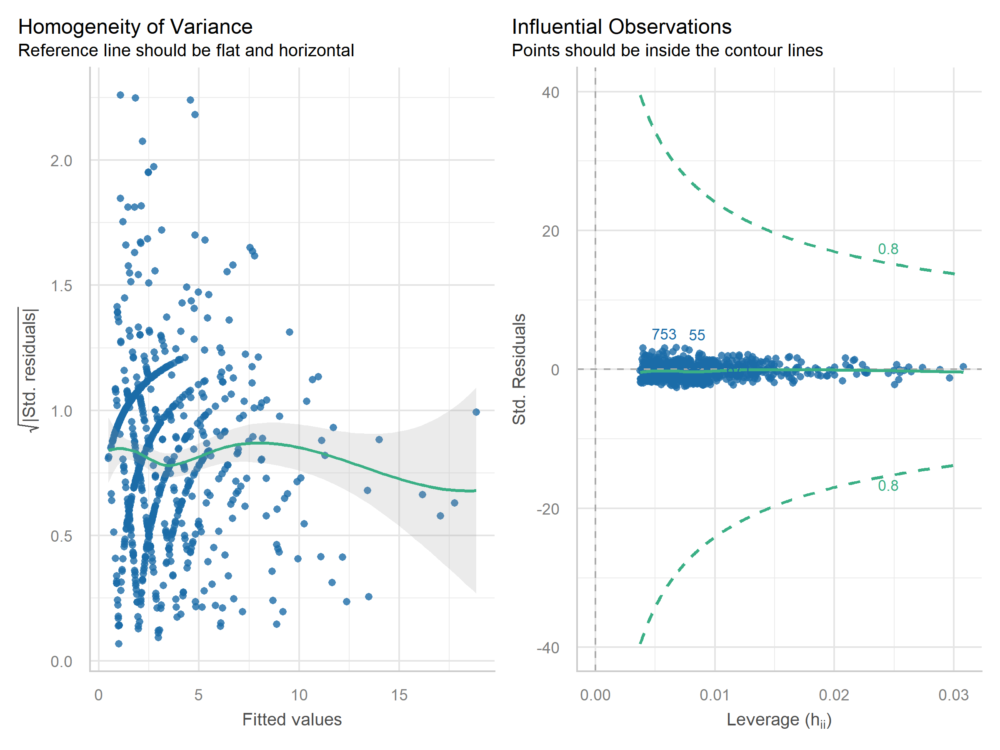
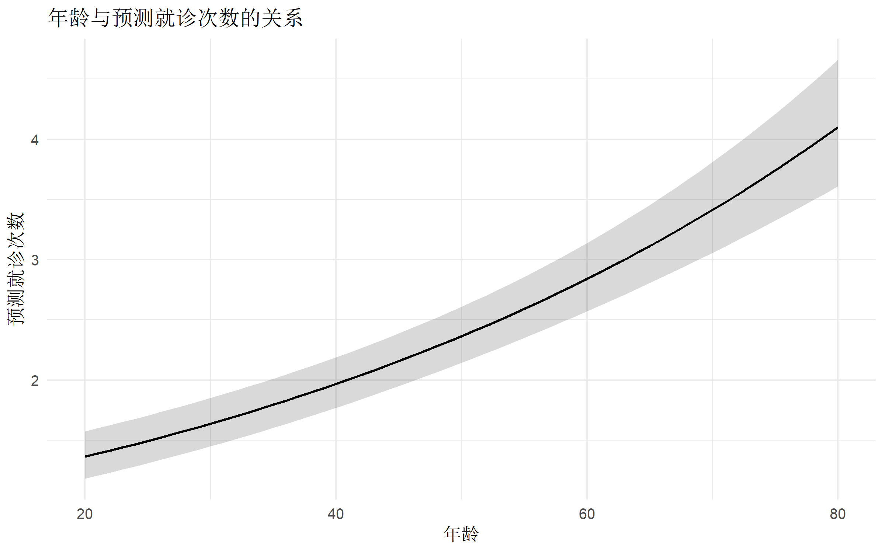
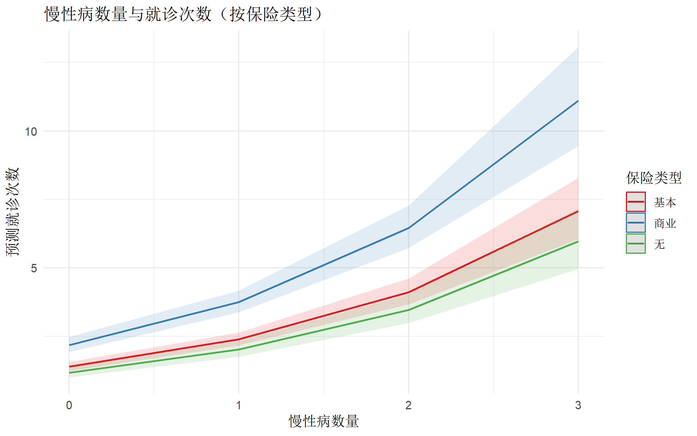

# 核心包
library(MASS) # 负二项回归
library(pscl) # 零膨胀模型
library(AER) # 过离散检验
library(performance) # 模型诊断
library(tidyverse) # 数据处理
library(broom) # 模型整理
library(gtsummary) # 结果表格
library(ggplot2) # 可视化Poisson 与负二项回归完全指南
R语言方法
统计建模
计数数据
什么是计数数据回归？
计数数据（Count Data） 是指取值为非负整数的数据（0, 1, 2, 3, …）。Poisson 回归和负二项回归是分析此类数据的核心方法。
适用场景
| 场景 | 示例 |
|---|---|
| 发病率研究 | 某地区癌症发病人数 |
| 事故分析 | 交通事故次数 |
| 生态学 | 样方中物种数量 |
| 医疗服务 | 就诊次数、住院天数 |
| 行为研究 | 吸烟支数、缺勤天数 |
模型选择决策树
计数数据
│
├── 方差 ≈ 均值？ ──Yes──→ Poisson 回归
│
└── 方差 > 均值？ ──Yes──→ 负二项回归（过离散）
│
└── 零值过多？ ─Yes─→ 零膨胀模型（ZIP/ZINB）核心公式
Poisson 回归： \[\log(\mu) = \beta_0 + \beta_1 X_1 + \cdots \quad \text{其中 } Y \sim \text{Poisson}(\mu)\]
负二项回归： \[\log(\mu) = \beta_0 + \beta_1 X_1 + \cdots \quad \text{其中 } Y \sim \text{NegBin}(\mu, \theta)\]
回归系数解读：\(e^{\beta_i}\) = 发病率比（IRR, Incidence Rate Ratio）
R 包安装与加载
数据准备
使用模拟的医疗利用数据：
# 模拟数据：年度就诊次数
set.seed(2024)
n <- 800
visit_data <- tibble(
id = 1:n,
age = round(runif(n, 20, 80)),
sex = factor(sample(c("男", "女"), n, replace = TRUE)),
chronic = rbinom(n, 3, 0.3), # 慢性病数量
insurance = factor(sample(c("无", "基本", "商业"), n,
replace = TRUE,
prob = c(0.2, 0.5, 0.3)
)),
income = round(rnorm(n, 50, 20)) # 收入（千元）
) |>
mutate(
# 生成就诊次数（Poisson 分布，存在过离散）
log_mu = -0.5 +
0.02 * age +
0.2 * (sex == "女") +
0.5 * chronic +
0.3 * (insurance == "基本") +
0.6 * (insurance == "商业") -
0.01 * income,
# 添加过离散
mu = exp(log_mu) * exp(rnorm(n, 0, 0.5)),
visits = rpois(n, lambda = mu)
) |>
mutate(visits = pmin(visits, 20)) # 限制最大值
# 查看数据
glimpse(visit_data)Rows: 800
Columns: 9
$ id <int> 1, 2, 3, 4, 5, 6, 7, 8, 9, 10, 11, 12, 13, 14, 15, 16, 17, 1…
$ age <dbl> 70, 39, 61, 62, 47, 62, 45, 38, 73, 27, 74, 77, 62, 51, 47, …
$ sex <fct> 男, 男, 男, 男, 女, 女, 男, 女, 女, 女, 男, 男, 男, 男, 女, 男, 女, 女, 女, 男, …
$ chronic <int> 1, 3, 1, 1, 2, 2, 0, 0, 0, 2, 2, 1, 0, 1, 0, 1, 1, 0, 2, 1, …
$ insurance <fct> 基本, 基本, 商业, 基本, 基本, 商业, 无, 基本, 基本, 基本, 基本, 商业, 基本, 无, 商业, 商业…
$ income <dbl> 60, 87, 30, 37, 31, 34, 67, 27, 46, 16, 31, 55, 80, 66, 64, …
$ log_mu <dbl> 1.10, 1.21, 1.52, 1.17, 1.63, 2.20, -0.27, 0.49, 1.00, 1.38,…
$ mu <dbl> 2.6256991, 4.4162407, 2.7385602, 2.9103810, 3.3281252, 15.75…
$ visits <dbl> 3, 2, 4, 2, 3, 19, 0, 2, 1, 11, 14, 6, 3, 0, 2, 9, 2, 3, 3, …# 结局分布
table(visit_data$visits)
0 1 2 3 4 5 6 7 8 9 10 11 12 13 14 15 16 17 19 20
133 140 144 119 77 50 30 26 15 11 14 10 9 3 6 1 2 1 2 7 探索性分析
# 就诊次数分布
ggplot(visit_data, aes(x = visits)) +
geom_histogram(binwidth = 1, fill = "#4f46e5", color = "white", alpha = 0.8) +
labs(
title = "年度就诊次数分布",
x = "就诊次数",
y = "频数"
) +
theme_minimal(base_size = 12)
# 检查均值和方差
cat("均值:", round(mean(visit_data$visits), 2), "\n")均值: 3.31 cat("方差:", round(var(visit_data$visits), 2), "\n")方差: 12.33 cat("方差/均值比:", round(var(visit_data$visits) / mean(visit_data$visits), 2), "\n")方差/均值比: 3.73 # 比值 > 1 提示过离散Poisson 回归
模型拟合
# 拟合 Poisson 回归
pois_model <- glm(
visits ~ age + sex + chronic + insurance + income,
data = visit_data,
family = poisson(link = "log")
)
summary(pois_model)
Call:
glm(formula = visits ~ age + sex + chronic + insurance + income,
family = poisson(link = "log"), data = visit_data)
Coefficients:
Estimate Std. Error z value Pr(>|z|)
(Intercept) -0.100855 0.093363 -1.080 0.28003
age 0.018205 0.001164 15.644 < 2e-16 ***
sex女 0.153304 0.039064 3.924 8.69e-05 ***
chronic 0.534433 0.022469 23.785 < 2e-16 ***
insurance商业 0.457244 0.042523 10.753 < 2e-16 ***
insurance无 -0.149484 0.057944 -2.580 0.00989 **
income -0.009631 0.001021 -9.433 < 2e-16 ***
---
Signif. codes: 0 '***' 0.001 '**' 0.01 '*' 0.05 '.' 0.1 ' ' 1
(Dispersion parameter for poisson family taken to be 1)
Null deviance: 2565.2 on 799 degrees of freedom
Residual deviance: 1475.9 on 793 degrees of freedom
AIC: 3482.1
Number of Fisher Scoring iterations: 5发病率比 (IRR)
# 提取 IRR 及置信区间
tidy(pois_model, conf.int = TRUE, exponentiate = TRUE) |>
filter(term != "(Intercept)") |>
select(term, IRR = estimate, conf.low, conf.high, p.value) |>
mutate(across(c(IRR, conf.low, conf.high), ~ round(.x, 3)))# A tibble: 6 × 5
term IRR conf.low conf.high p.value
<chr> <dbl> <dbl> <dbl> <dbl>
1 age 1.02 1.02 1.02 3.63e- 55
2 sex女 1.17 1.08 1.26 8.69e- 5
3 chronic 1.71 1.63 1.78 4.75e-125
4 insurance商业 1.58 1.45 1.72 5.74e- 27
5 insurance无 0.861 0.768 0.964 9.89e- 3
6 income 0.99 0.988 0.992 3.99e- 21整洁输出
pois_model |>
tbl_regression(
exponentiate = TRUE,
label = list(
age ~ "年龄",
sex ~ "性别",
chronic ~ "慢性病数量",
insurance ~ "保险类型",
income ~ "收入（千元）"
)
) |>
bold_p() |>
modify_header(label = "**变量**", estimate = "**IRR**")| 变量 | IRR | 95% CI | p-value |
|---|---|---|---|
| 年龄 | 1.02 | 1.02, 1.02 | <0.001 |
| 性别 | |||
| 男 | — | — | |
| 女 | 1.17 | 1.08, 1.26 | <0.001 |
| 慢性病数量 | 1.71 | 1.63, 1.78 | <0.001 |
| 保险类型 | |||
| 基本 | — | — | |
| 商业 | 1.58 | 1.45, 1.72 | <0.001 |
| 无 | 0.86 | 0.77, 0.96 | 0.010 |
| 收入（千元） | 0.99 | 0.99, 0.99 | <0.001 |
| Abbreviations: CI = Confidence Interval, IRR = Incidence Rate Ratio | |||
过离散检验
方法 1：残差离散参数
# 计算过离散参数
n_obs <- nrow(visit_data)
n_params <- length(coef(pois_model))
# Pearson 残差
pearson_resid <- residuals(pois_model, type = "pearson")
dispersion <- sum(pearson_resid^2) / (n_obs - n_params)
cat("离散参数:", round(dispersion, 3), "\n")离散参数: 1.903 # 显著 > 1 提示过离散方法 2：AER 包检验
# 正式的过离散检验
dispersiontest(pois_model)
Overdispersion test
data: pois_model
z = 6.6702, p-value = 1.277e-11
alternative hypothesis: true dispersion is greater than 1
sample estimates:
dispersion
1.893057 # p < 0.05 拒绝 "无过离散" 原假设方法 3：可视化检验
# 观察值 vs 模型预测
visit_data$fitted_pois <- fitted(pois_model)
ggplot(visit_data, aes(x = fitted_pois, y = visits)) +
geom_jitter(alpha = 0.4, color = "#4f46e5", width = 0.2, height = 0.2) +
geom_abline(slope = 1, intercept = 0, color = "red", linetype = "dashed") +
labs(
title = "观察值 vs 预测值",
x = "Poisson 模型预测值",
y = "实际就诊次数"
) +
theme_minimal(base_size = 12)
负二项回归
当存在过离散时，使用负二项分布：
# 拟合负二项回归
nb_model <- glm.nb(
visits ~ age + sex + chronic + insurance + income,
data = visit_data
)
summary(nb_model)
Call:
glm.nb(formula = visits ~ age + sex + chronic + insurance + income,
data = visit_data, init.theta = 4.232512845, link = log)
Coefficients:
Estimate Std. Error z value Pr(>|z|)
(Intercept) -0.102368 0.125472 -0.816 0.41458
age 0.018353 0.001596 11.496 < 2e-16 ***
sex女 0.157906 0.054640 2.890 0.00385 **
chronic 0.543248 0.032946 16.489 < 2e-16 ***
insurance商业 0.451984 0.060441 7.478 7.54e-14 ***
insurance无 -0.169898 0.076867 -2.210 0.02709 *
income -0.009902 0.001430 -6.926 4.33e-12 ***
---
Signif. codes: 0 '***' 0.001 '**' 0.01 '*' 0.05 '.' 0.1 ' ' 1
(Dispersion parameter for Negative Binomial(4.2325) family taken to be 1)
Null deviance: 1475.5 on 799 degrees of freedom
Residual deviance: 888.4 on 793 degrees of freedom
AIC: 3304
Number of Fisher Scoring iterations: 1
Theta: 4.233
Std. Err.: 0.524
2 x log-likelihood: -3287.960 # 查看离散参数 theta
cat("theta:", nb_model$theta, "\n")theta: 4.232513 cat("标准误:", nb_model$SE.theta, "\n")标准误: 0.5241768 # theta 越小，过离散越严重负二项 vs Poisson 比较
# 使用 AIC 比较
AIC(pois_model, nb_model) df AIC
pois_model 7 3482.087
nb_model 8 3303.960# 似然比检验
lrtest <- 2 * (logLik(nb_model) - logLik(pois_model))
p_value <- pchisq(lrtest, df = 1, lower.tail = FALSE)
cat("似然比检验 p 值:", format.pval(p_value, digits = 3), "\n")似然比检验 p 值: <2e-16 负二项回归结果
nb_model |>
tbl_regression(
exponentiate = TRUE,
label = list(
age ~ "年龄",
sex ~ "性别",
chronic ~ "慢性病数量",
insurance ~ "保险类型",
income ~ "收入（千元）"
)
) |>
add_significance_stars() |>
modify_header(label = "**变量**", estimate = "**IRR**")| 变量 | IRR1 | SE |
|---|---|---|
| 年龄 | 1.02*** | 0.002 |
| 性别 | ||
| 男 | — | — |
| 女 | 1.17** | 0.055 |
| 慢性病数量 | 1.72*** | 0.033 |
| 保险类型 | ||
| 基本 | — | — |
| 商业 | 1.57*** | 0.060 |
| 无 | 0.84* | 0.077 |
| 收入（千元） | 0.99*** | 0.001 |
| 1 p<0.05; p<0.01; p<0.001 | ||
| Abbreviations: CI = Confidence Interval, IRR = Incidence Rate Ratio, SE = Standard Error | ||
零膨胀模型
当零值过多时（超过 Poisson/负二项预期），使用零膨胀模型。
检验零值过多
# 观察零值比例
zero_observed <- mean(visit_data$visits == 0)
# Poisson 模型预期的零值比例
zero_expected_pois <- mean(dpois(0, fitted(pois_model)))
# 负二项预期的零值比例
zero_expected_nb <- mean(dnbinom(0, mu = fitted(nb_model), size = nb_model$theta))
cat("观察零值比例:", round(zero_observed * 100, 1), "%\n")观察零值比例: 16.6 %cat("Poisson 预期:", round(zero_expected_pois * 100, 1), "%\n")Poisson 预期: 11.3 %cat("负二项预期:", round(zero_expected_nb * 100, 1), "%\n")负二项预期: 16 %零膨胀 Poisson (ZIP)
# 零膨胀 Poisson 模型
zip_model <- zeroinfl(
visits ~ age + sex + chronic + insurance + income |
chronic + insurance, # 零膨胀部分的预测变量
data = visit_data,
dist = "poisson"
)
summary(zip_model)
Call:
zeroinfl(formula = visits ~ age + sex + chronic + insurance + income |
chronic + insurance, data = visit_data, dist = "poisson")
Pearson residuals:
Min 1Q Median 3Q Max
-2.3680 -0.8888 -0.2849 0.5524 6.7491
Count model coefficients (poisson with log link):
Estimate Std. Error z value Pr(>|z|)
(Intercept) 0.010637 0.097094 0.110 0.912761
age 0.018078 0.001202 15.038 < 2e-16 ***
sex女 0.154005 0.040058 3.845 0.000121 ***
chronic 0.476440 0.024271 19.630 < 2e-16 ***
insurance商业 0.433576 0.044523 9.738 < 2e-16 ***
insurance无 -0.147719 0.062056 -2.380 0.017294 *
income -0.009093 0.001039 -8.753 < 2e-16 ***
Zero-inflation model coefficients (binomial with logit link):
Estimate Std. Error z value Pr(>|z|)
(Intercept) -1.5463 0.3060 -5.054 4.34e-07 ***
chronic -1.6892 0.4521 -3.737 0.000187 ***
insurance商业 -0.4877 0.4990 -0.977 0.328345
insurance无 0.2234 0.5678 0.393 0.694002
---
Signif. codes: 0 '***' 0.001 '**' 0.01 '*' 0.05 '.' 0.1 ' ' 1
Number of iterations in BFGS optimization: 18
Log-likelihood: -1715 on 11 Df零膨胀负二项 (ZINB)
# 零膨胀负二项模型
zinb_model <- zeroinfl(
visits ~ age + sex + chronic + insurance + income |
chronic + insurance,
data = visit_data,
dist = "negbin"
)
summary(zinb_model)
Call:
zeroinfl(formula = visits ~ age + sex + chronic + insurance + income |
chronic + insurance, data = visit_data, dist = "negbin")
Pearson residuals:
Min 1Q Median 3Q Max
-1.5813 -0.7646 -0.2429 0.4725 5.0418
Count model coefficients (negbin with log link):
Estimate Std. Error z value Pr(>|z|)
(Intercept) -0.050550 0.125108 -0.404 0.68617
age 0.018443 0.001593 11.580 < 2e-16 ***
sex女 0.157523 0.054189 2.907 0.00365 **
chronic 0.505921 0.035358 14.309 < 2e-16 ***
insurance商业 0.442216 0.061320 7.212 5.53e-13 ***
insurance无 -0.163720 0.078923 -2.074 0.03804 *
income -0.009695 0.001404 -6.907 4.94e-12 ***
Log(theta) 1.539889 0.132239 11.645 < 2e-16 ***
Zero-inflation model coefficients (binomial with logit link):
Estimate Std. Error z value Pr(>|z|)
(Intercept) -2.2545 0.6072 -3.713 0.000205 ***
chronic -9.8971 77.2154 -0.128 0.898011
insurance商业 -0.4379 1.0229 -0.428 0.668626
insurance无 0.3481 1.0506 0.331 0.740390
---
Signif. codes: 0 '***' 0.001 '**' 0.01 '*' 0.05 '.' 0.1 ' ' 1
Theta = 4.6641
Number of iterations in BFGS optimization: 26
Log-likelihood: -1641 on 12 Df模型比较
# Vuong 检验：比较零膨胀模型与标准模型
vuong(zip_model, pois_model)Vuong Non-Nested Hypothesis Test-Statistic:
(test-statistic is asymptotically distributed N(0,1) under the
null that the models are indistinguishible)
-------------------------------------------------------------
Vuong z-statistic H_A p-value
Raw 2.6247360 model1 > model2 0.0043358
AIC-corrected 2.0872706 model1 > model2 0.0184318
BIC-corrected 0.8283623 model1 > model2 0.2037327vuong(zinb_model, nb_model)Vuong Non-Nested Hypothesis Test-Statistic:
(test-statistic is asymptotically distributed N(0,1) under the
null that the models are indistinguishible)
-------------------------------------------------------------
Vuong z-statistic H_A p-value
Raw 1.225645 model1 > model2 0.11017
AIC-corrected -0.361933 model2 > model1 0.35870
BIC-corrected -4.080527 model2 > model1 2.2467e-05# AIC 比较
AIC(pois_model, nb_model, zip_model, zinb_model) df AIC
pois_model 7 3482.087
nb_model 8 3303.960
zip_model 11 3451.018
zinb_model 12 3305.784暴露时间调整（Rate 模型）
当观察时间不同时，需要使用偏移量（offset）：
# 添加随访时间
visit_data <- visit_data |>
mutate(
followup_years = runif(n, 0.5, 2) # 随访时间（年）
)
# 使用 offset 调整暴露时间
pois_rate <- glm(
visits ~ age + sex + chronic + insurance + offset(log(followup_years)),
data = visit_data,
family = poisson
)
summary(pois_rate)
Call:
glm(formula = visits ~ age + sex + chronic + insurance + offset(log(followup_years)),
family = poisson, data = visit_data)
Coefficients:
Estimate Std. Error z value Pr(>|z|)
(Intercept) -0.744336 0.080359 -9.263 < 2e-16 ***
age 0.017713 0.001174 15.085 < 2e-16 ***
sex女 0.149779 0.039073 3.833 0.000126 ***
chronic 0.518782 0.022418 23.142 < 2e-16 ***
insurance商业 0.471642 0.042386 11.127 < 2e-16 ***
insurance无 -0.151766 0.057893 -2.621 0.008755 **
---
Signif. codes: 0 '***' 0.001 '**' 0.01 '*' 0.05 '.' 0.1 ' ' 1
(Dispersion parameter for poisson family taken to be 1)
Null deviance: 2795.2 on 799 degrees of freedom
Residual deviance: 1834.2 on 794 degrees of freedom
AIC: 3838.4
Number of Fisher Scoring iterations: 5# 结果解读为发病率比（每人年）
tidy(pois_rate, conf.int = TRUE, exponentiate = TRUE) |>
filter(term != "(Intercept)") |>
select(term, IRR = estimate, conf.low, conf.high, p.value)# A tibble: 5 × 5
term IRR conf.low conf.high p.value
<chr> <dbl> <dbl> <dbl> <dbl>
1 age 1.02 1.02 1.02 2.02e- 51
2 sex女 1.16 1.08 1.25 1.26e- 4
3 chronic 1.68 1.61 1.76 1.77e-118
4 insurance商业 1.60 1.47 1.74 9.25e- 29
5 insurance无 0.859 0.766 0.962 8.75e- 3模型诊断
残差分析
# Deviance 残差
visit_data$resid_dev <- residuals(nb_model, type = "deviance")
ggplot(visit_data, aes(x = fitted(nb_model), y = resid_dev)) +
geom_point(alpha = 0.4, color = "#4f46e5") +
geom_hline(yintercept = 0, linetype = "dashed", color = "red") +
geom_smooth(method = "loess", color = "#10b981", se = FALSE) +
labs(
title = "Deviance 残差 vs 拟合值",
x = "拟合值",
y = "Deviance 残差"
) +
theme_minimal(base_size = 12)
综合诊断
check_model(nb_model, check = c("qq", "outliers", "homogeneity"))
影响诊断
# Cook's 距离
visit_data$cooks_d <- cooks.distance(nb_model)
# 识别高影响力观测
high_influence <- which(visit_data$cooks_d > 4 / nrow(visit_data))
cat("高影响力观测数量:", length(high_influence), "\n")高影响力观测数量: 36 预测
个体预测
# 新数据预测
new_data <- tibble(
age = c(40, 60, 80),
sex = factor(c("男", "女", "男"), levels = levels(visit_data$sex)),
chronic = c(0, 1, 2),
insurance = factor(c("无", "基本", "商业"), levels = levels(visit_data$insurance)),
income = c(60, 50, 40)
)
# 预测期望值
pred <- predict(nb_model, newdata = new_data, type = "response", se.fit = TRUE)
new_data |>
mutate(
predicted = round(pred$fit, 2),
se = round(pred$se.fit, 2),
lower = round(pred$fit - 1.96 * pred$se.fit, 2),
upper = round(pred$fit + 1.96 * pred$se.fit, 2)
)# A tibble: 3 × 9
age sex chronic insurance income predicted se lower upper
<dbl> <fct> <dbl> <fct> <dbl> <dbl> <dbl> <dbl> <dbl>
1 40 男 0 无 60 0.88 0.08 0.73 1.02
2 60 女 1 基本 50 3.34 0.16 3.02 3.66
3 80 男 2 商业 40 12.3 0.94 10.4 14.1 边际效应可视化
# 年龄的边际效应
library(ggeffects)
pred_age <- ggpredict(nb_model, terms = "age [20:80]")
plot(pred_age) +
labs(
title = "年龄与预测就诊次数的关系",
x = "年龄",
y = "预测就诊次数"
) +
theme_minimal(base_size = 12)
# 多变量预测图
pred_chronic <- ggpredict(nb_model, terms = c("chronic [0:3]", "insurance"))
plot(pred_chronic) +
labs(
title = "慢性病数量与就诊次数（按保险类型）",
x = "慢性病数量",
y = "预测就诊次数",
color = "保险类型"
) +
theme_minimal(base_size = 12)
稳健标准误
library(sandwich)
library(lmtest)
# 使用稳健标准误
coeftest(nb_model, vcov = vcovHC(nb_model, type = "HC1"))
z test of coefficients:
Estimate Std. Error z value Pr(>|z|)
(Intercept) -0.1023680 0.1295706 -0.7901 0.429495
age 0.0183534 0.0016220 11.3151 < 2.2e-16 ***
sex女 0.1579062 0.0567742 2.7813 0.005414 **
chronic 0.5432478 0.0329738 16.4751 < 2.2e-16 ***
insurance商业 0.4519842 0.0641486 7.0459 1.843e-12 ***
insurance无 -0.1698983 0.0732351 -2.3199 0.020346 *
income -0.0099020 0.0014155 -6.9953 2.648e-12 ***
---
Signif. codes: 0 '***' 0.001 '**' 0.01 '*' 0.05 '.' 0.1 ' ' 1报告格式
# 完整报告表格
nb_model |>
tbl_regression(
exponentiate = TRUE,
label = list(
age ~ "年龄（每增加1岁）",
sex ~ "性别",
chronic ~ "慢性病数量（每增加1种）",
insurance ~ "保险类型",
income ~ "收入（每增加1千元）"
),
pvalue_fun = ~ style_pvalue(.x, digits = 3)
) |>
add_global_p() |>
add_glance_table(include = c(AIC, BIC, nobs)) |>
modify_header(label = "**变量**", estimate = "**IRR**") |>
modify_caption("**表. 负二项回归分析结果**") |>
modify_footnote(estimate = "IRR = 发病率比")| 变量 | IRR1 | 95% CI | p-value |
|---|---|---|---|
| 年龄（每增加1岁） | 1.02 | 1.02, 1.02 | <0.001 |
| 性别 | 0.004 | ||
| 男 | — | — | |
| 女 | 1.17 | 1.05, 1.30 | |
| 慢性病数量（每增加1种） | 1.72 | 1.61, 1.84 | <0.001 |
| 保险类型 | <0.001 | ||
| 基本 | — | — | |
| 商业 | 1.57 | 1.40, 1.77 | |
| 无 | 0.84 | 0.73, 0.98 | |
| 收入（每增加1千元） | 0.99 | 0.99, 0.99 | <0.001 |
| AIC | 3,304 | ||
| BIC | 3,341 | ||
| No. Obs. | 800 | ||
| 1 IRR = 发病率比 | |||
| Abbreviations: CI = Confidence Interval, IRR = Incidence Rate Ratio | |||
常见问题与陷阱
1. Poisson vs 负二项选择
| Poisson | 负二项 |
|---|---|
| 方差 = 均值 | 方差 > 均值 |
| 无过离散 | 存在过离散 |
| 更简洁 | 更灵活 |
| 计算更快 | 额外估计 θ |
2. 零膨胀模型的使用
# 仅当以下条件满足时使用：
# 1. 零值比例明显高于模型预期
# 2. 存在明确的"结构性零"（永远不会发生）
# 3. 普通模型无法很好拟合
# 例如：从不吸烟者的吸烟量（结构性零）3. 暴露时间差异
# 必须使用 offset 调整！
# 错误：glm(events ~ x, family = poisson)
# 正确：glm(events ~ x + offset(log(time)), family = poisson)4. 相对风险 vs 发病率比
# Poisson/负二项回归估计的是 IRR，不是 RR
# 对于罕见事件，IRR ≈ RR
# 对于常见事件，两者可能差异较大完整分析模板
# ========== 计数数据回归完整流程 ==========
library(MASS)
library(AER)
library(pscl)
# 1. 探索数据
mean(y)
var(y) # 检查均值/方差
table(y == 0) # 零值比例
# 2. 拟合 Poisson 模型
pois <- glm(y ~ x1 + x2, family = poisson, data = data)
# 3. 检验过离散
dispersiontest(pois)
# 4. 如果过离散，拟合负二项
nb <- glm.nb(y ~ x1 + x2, data = data)
AIC(pois, nb)
# 5. 检验零膨胀
mean(y == 0)
mean(dpois(0, fitted(pois)))
# 6. 如需要，拟合零膨胀模型
zinb <- zeroinfl(y ~ x1 + x2 | z1, dist = "negbin", data = data)
# 7. 结果呈现
tbl_regression(nb, exponentiate = TRUE)总结
| 模型 | 适用条件 | R 函数 |
|---|---|---|
| Poisson | 方差≈均值，无过离散 | glm(..., family = poisson) |
| 负二项 | 方差>均值，存在过离散 | MASS::glm.nb() |
| 零膨胀 Poisson | 零值过多 | pscl::zeroinfl(..., dist = "poisson") |
| 零膨胀负二项 | 零值过多 + 过离散 | pscl::zeroinfl(..., dist = "negbin") |
报告计数数据回归的 Checklist
推荐阅读
- Cameron AC, Trivedi PK. Regression Analysis of Count Data (2nd ed.)
- Hilbe JM. Negative Binomial Regression (2nd ed.)
- UCLA: 计数数据回归